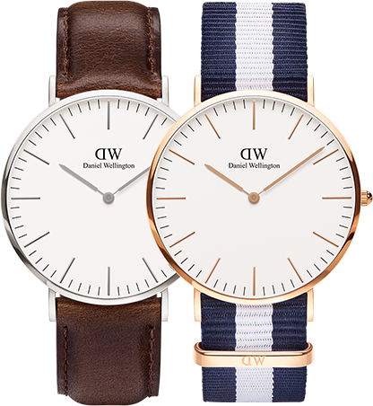

<section class="classic-full-wrapper">
<section class="classic-hero-wrapper">
    <section class="classic-hero-container">
        
        <aside class="hero-img-content">
            <p class="classic-hero-text1">classic</p>
            <p class="classic-hero-40mm">40mm</p>
            <p class="classic-hero-italic">The Watches in our Classic Collection prove that minamalism is truly timeless</p>


            <p class="classic-hero-more" ng-click="showme = !showme" ng-hide="showme">Read More</p>
            <a id="up-arrow-style" ng-click="showme = !showme" ng-hide="showme"><i class="fa fa-angle-down" aria-hidden="true"></i></a>

        </aside>
    </section>
</section>

<section class="readmore-wrapper" ng-show="showme">
    <section class="readmore-container">
        <aside id="style-readmore-img">
            
        </aside>

        <aside class="style-readmore-text">
            <p class="classic-toggle-text">The silver and rose gold watches in our Classic Collection embody their moniker <br>in every sense, with a timeless minimalism and simplicity in their design. It’s a <br> watch that is as personal as your choice of strap, whether it is genuine
                leather or <br> the playful NATO option. It is an iconic companion – no matter the outfit or the <br> occasion.</p>

            <aside class="close-style">
            <a id="close-arrow-style" ng-click="showme = !showme"><i class="fa fa-angle-up" aria-hidden="true"></i></a>
            <span class="classic-hero-close" ng-click="showme = !showme">Close</span>
            </aside>
        </aside>
    </section>
</section>
</section>